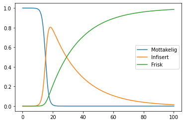

Smittespredningsmodellering
Bakgrunn
Vi skal se nærmere på SIR-modellen for smittespredning. I denne modellen deler vi en befolkning inn i tre grupper, de som er mottakelige for en sykdom (S for «susceptible»), de som er infisert av en sykdom (I for «infected») og de «har kommet seg», eller restituert, fra en sykdomen (R for «recovered»).
Vi ser også at en person i gruppen S kun kan gå til I, før hen går til R.
Om vi starter med en befolkning hvor alle bortsett fra én er i S, er det to ting som kan skje:
- Den ene smittede kan smitte en eller flere fra S, eller
- den ene smittede kan bli restituert før hen rekker å smitte noen fra S.
Det virker naturlig at dersom vi ser på en sykdom som smitter sjelden og har kort restitusjonstid (hvor lenge en person er i I), øker dette sannsynligheten for å havne i scenario, og vice versa.
Matematisk modell
Vi kan sette opp en SIR-modell som et sett med differensiallikninger, hvor hver likning beskriver endringen til en av gruppestørrelsene. Vi får da en likning for \(S'(t)\), en for \(I'(t)\) og en for \(R'(t)\).
Vi får da et likningssett gitt som
\begin{align*} S'(t) &= -\beta S I \\ I'(t) &= \beta S I - \gamma I \\ R'(t) &= \gamma I, \end{align*}hvor \(\beta\) og \(\gamma\) er to positive konstanter.
Geogebra
Du finner en løsning av disse likningene i Geogebra her.
Programmering
==:
import matplotlib.pyplot as plt # Grensebetingelser, eller initialbetingelser S = [1.0] # i praksis alle er mottakelige i starten I = [1e-6] # andel smittede i starten (1e-6 = 1*10^-6) R = [0] # ingen er restituert i starten ts = [0] # første tidspunkt t = 0 delta_t = 0.1 # hvor langt framover skal vi gå hvert skritt t_max = 100 # hvor langt skal vi regne? beta = 1 # hvor mange møtes per tid? gamma = 0.05 # 1 / antall dager du er sjuk # Vi løser difflikningene ved å bruke "framover-euler" # aka. "Eulers metode" while t < t_max: t += delta_t # Forrige verdier forrige_S = S[-1] # siste verdi i lista forrige_I = I[-1] forrige_R = R[-1] # Dette er den faktiske modellen dSdt = -beta * forrige_I * forrige_S dIdt = beta * forrige_I * forrige_S - gamma * forrige_I dRdt = gamma * forrige_I # Oppdaterer verdiene ved å ta med derivert ganger delta_t ny_S = forrige_S + dSdt * delta_t ny_I = forrige_I + dIdt * delta_t ny_R = forrige_R + dRdt * delta_t # Legger inn de nye verdiene S.append(ny_S) I.append(ny_I) R.append(ny_R) ts.append(t) plt.plot(ts, S, label="Mottakelig") plt.plot(ts, I, label="Infisert") plt.plot(ts, R, label="Frisk") plt.legend()
